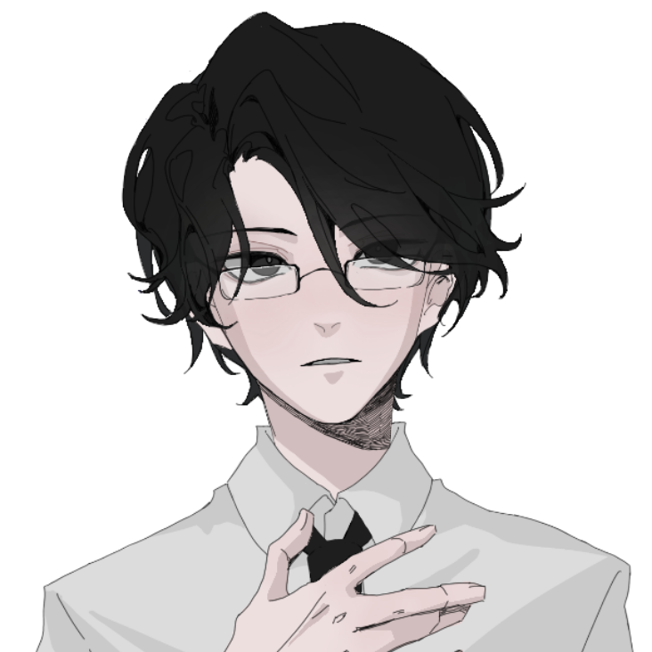
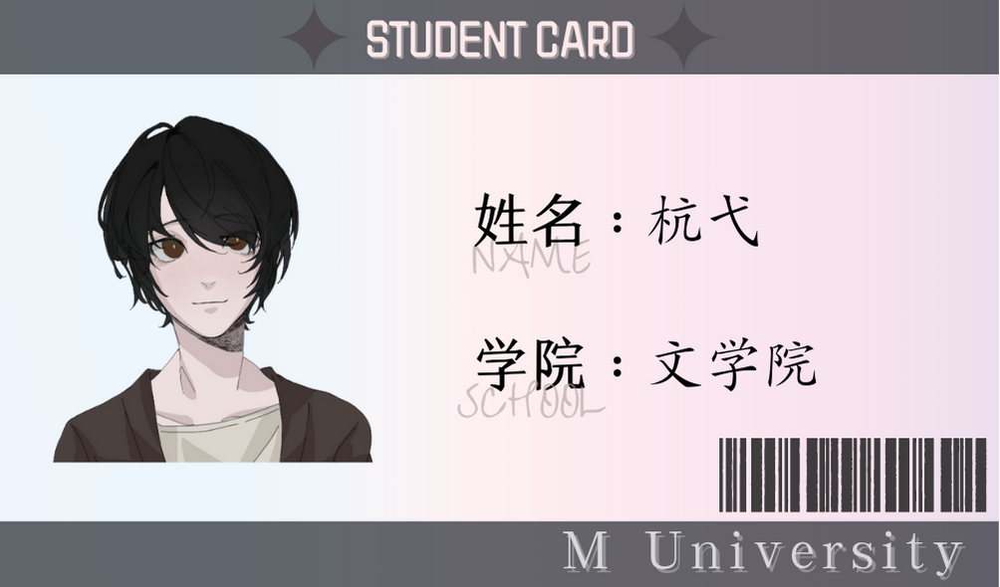

左越
温柔霸道多金好男人
资助杭弋上大学的唯一请求是两人假结婚。
温柔霸道多金好男人
资助杭弋上大学的唯一请求是两人假结婚。
学生证：

家族遭意外破产，走投无路的情况下答应了左越的名为假结婚实为包养的条件，受他的资助上学。
杭弋的资助人左先生帅气多金温柔体贴，而且身材一流床上功夫无可挑剔——你问杭弋怎么知道的？因为他们结婚了。
器大活好温柔攻×又怂又浪作精受
——
先婚后爱 没羞没臊的甜宠日常 无虐 1v1HE
我是土狗，就喜欢这种庸俗老套的甜梗tut
尚未到傍晚的时候，天空明净，没有一丝流云。
左越站在窗前打电话，玻璃窗里盛着他模糊的眉眼，表情很淡，偶尔发出认同的声音示意对方继续说下去。
身后的门突兀地被一把推开，来人“砰”地摔上门，毫不见外地坐上门口的沙发。
能这样不敲门随意进出他办公室的也只有一个人了。左越没有回头，简短地回复了电话那头，客气地笑笑：“谢谢，这次还要麻烦你们了。”
挂了电话，身后的声音带着重重的鼻音，拖腔拖调道：“左先生……”
左越转头，与那人湿漉漉的眼睛对上，为合作对象稍有些烦躁的心绪蓦地消下去。他两三步走到对方身边：“怎么了？”
杭弋抿了抿唇，不回答。
左越思考了一下，想到了一种可能性：“……挂科了？”
“才没有——！”杭弋急匆匆地反驳道，而后又底气不足地补充，“呃、我是说——有可能……”
“当时你是怎么说的？嗯？”左越看上去好像没有生气，声音里甚至还带着笑。但杭弋知道，他对所有事情的不满都不会显露在表面上。
他就像是被家长训斥的小孩那样可怜兮兮地去看左越，刚好碰上对方饶有深意的目光。他一边在心里安慰自己没考好不是什么大事，一边又悄悄地感到些许惭愧。
他就像是被家长训斥的小孩那样可怜兮兮地去看左越，刚好碰上对方饶有深意的目光。他一边在心里安慰自己没考好不是什么大事，一边又悄悄地感到些许惭愧。
左越资助自己上学可是诚意十足，从学费到住宿，大大小小各种开销包括零花钱，左金主给的始终很到位。而他对杭弋的要求只有一个：成绩稳定，不要挂科。
两人都没有说话，对视了有一会儿，还是杭弋自知理亏，先讨好地卖乖，像小猫一样把头凑到左越颈边：“我有好好复习……而且、而且不一定会挂科的……我错了……”
少年人支棱的碎发蹭得左越痒痒的，他抬手在对方凌乱的发顶上揉了揉，暗笑一声：“别撒娇……”
话还未说完，杭弋像是下定了什么决心似的，仰起头，主动吻上了左越的唇。左越只愣了一下，便掌握了主动权，低下去的尾音就这样被吞进了交缠的唇齿之间，变成了啧啧作响的水声。
杭弋本来打算偷袭完了就跑，没想到被左越熟练地撬开牙关，肆意掠夺。他身子越来越软，整个人都往左越怀里陷。左越干脆将他半抱着，让他跨坐在自己身上。
一吻毕，杭弋整张小脸都泛着红，大口大口喘着气，见男人的神色不对劲，小心翼翼地问：“所以……可以原谅我了吗？”
少年骨架小，可以很轻松地抱个满怀。杭弋由于急促的呼吸带来一起一伏，在左越腿间不安分地蹭着。左越看着他无意识地露出无辜表情，微微有些走神，想起之前才认识杭弋那会儿，那人可不会这样装乖撒娇，更做不出主动投怀送抱的事情。
美色当前，他定了定神，眼底缓缓浮现出揶揄的笑意，道：“原不原谅，得看你的诚意。”
杭弋本来也有些情动，闻言伸手要去解左越一丝不苟的西装扣，明知故问道：“什么诚意？”
左越捉住他的手不让他有所动作，而后命令道：“把自己的衣服脱了。”
杭弋扁扁嘴，也没有想忤逆他的意思，干脆地脱下了卫衣，露出精瘦的上半身。少年喜欢打球，身板虽然瘦却并不单薄，腰腹还有薄薄的肌肉。
左越沿着流畅柔美的线条摩挲着，令杭弋觉得有些痒，扭着身子忍不住想躲，又被左越死死扣住。男人的手来到胸口，张开手对着那片软乎乎的乳肉又捻又按，娴熟地在上面画着圈，力道忽轻忽重。杭弋被酥麻的感觉冲击得几乎坐不稳，攀着左越的肩轻轻颤抖着：“啊嗯……”
直至胸口的皮肤全都呈现出淫靡的水红色，两颗嫣红的乳珠硬如石子，几乎要滴出血来，左越才肯放过他，双手来到胯间，一把拉下对方的运动裤。
纯白色内裤里的性器颤颤巍巍地抬头，顶端濡湿了布料，洇开一片刻意的湿痕。
“这么有精神。”左越调笑一句，隔着内裤揉了一把，肉茎不堪重负似的一哆嗦，从顶部又吐出透明的淫液。
杭弋整个尾椎骨都发麻，无力地靠在左越的肩上，呜呜咽咽地呻吟着，眼睛里蓄起生理性的泪，像是蒙了一层雾。
“刚刚你问我，什么诚意……”男人弯了弯天生含笑的桃花眼，浅色的眼珠反射着玻璃一般的色泽，看上去很具蛊惑力，“那就……射几次做几套题吧。”
“我很期待……你的诚意。”
后续海棠可看。